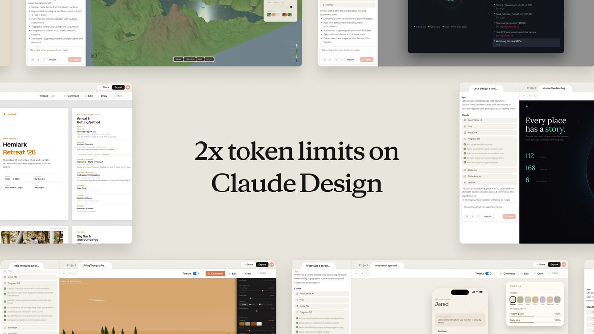
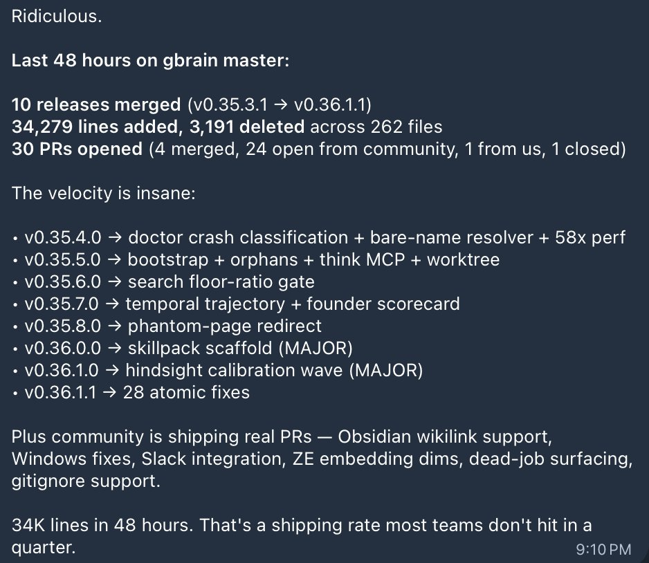

🤖
第二号
首页
AI 日报
深度调研
⌕
Search
⌘K
Search
搜索第二号知识库
×
AI 日报
深度调研
思维模型
Esc 关闭
AI Builders Daily · 2026.5.20
🔮 AI Builders 日报
Anthropic 罕见发布 Claude Code 质量事故完整尸检——三个独立 Bug 叠加，揭示「模型能力 ≠ 产品体验」。Claude 平台路线图深度曝光：Harness 工程正在成为核心壁垒。Managed Agents 推出文件系统级记忆，连接器扩展至 15+ 生活场景。
Postmortem
Harness 工程
Claude Code
Agent Memory
Claude Connectors
Builder 动态
1
重大事故报告
1
播客深度解析
6
Builder 动态
15
GitHub 热门
今日要点
🩺
Anthropic 发布 Claude Code 质量事故完整尸检
— 三个独立 Bug 叠加（推理 effort 下调 + 推理历史被清 + 输出长度限制），让用户在过去一个月经历了「变笨」「失忆」「啰嗦」。不是模型退化，而是 Harness 层连环失误。Anthropic 承诺完整 eval suite + 渐进灰度发布 + 全员使用公开版。
📄 查看完整报告 →
🧠
Claude Managed Agents 推出文件系统级内置记忆
— 记忆以文件存储，Claude 用 bash/文件读写管理。Netflix 跨会话携带上下文，Rakuten 首次通过错误率降低 97%，Wisedocs 验证速度提升 30%。支持多 Agent 共享、权限隔离、审计日志。
📄 查看原文 →
🎙️ 播客深度解析
Claude 平台路线图：Harness 与模型正在深度绑定
嘉宾：Angela（Claude 平台产品负责人）和 Caitlin（工程负责人）| 主持：Dan Shipper。AI & I by Every 播客 40 分钟深度对话，揭示了 Anthropic 的平台演进底层逻辑。
🧩 Harness 工程 = 新一代竞争壁垒
Caitlin 直言：每个 lab 技术路线不同，通用框架越来越走不通。「同一个模型，不同 Harness 跑出来的 eval 结果天差地别」——Managed Agents 的 Memory 开发中验证了这一点。Harness 和模型需要深度配对才能榨干每个模型的最佳表现。
🏗️ 从「给你 API」到「帮你搞定结果」
Angela 解释为什么做 Managed Agents：团队内部反复写「让 Claude 在云上跑 Loop」的代码，每次搭服务器/文件系统/沙箱——「被折磨够了，做成产品给大家用」。设计原则：强约束文件系统 + skills + 开放 MCP 连接器。
🔮 未来：Claude 自我理解 → 自我重构
让 Claude 自动判断「用什么模型」「怎么编排子 agent」「用什么架构」——「运行时写出自己需要的 Agent 结构」。如果这个愿景成真，平台需要支撑的并发规模和复杂度将是指数级的。
🎧 完整播客 →
🔧 深度分析
Anthropic Claude Code 质量事故全复盘
Anthropic Engineering 发布了一份罕见的完整 postmortem，解释了过去一个月 Claude Code 体验下降的三个根因。一份值得所有 AI 产品团队逐字阅读的文档。
1
推理强度默认值被下调
3/4 → 4/7
默认推理 effort 从
high
降到
medium
，避免 Opus 4.6 思考过久导致 UI 卡死。副作用：用户普遍感觉「变笨了」。在用户反馈后恢复，Opus 4.7 默认为
xhigh
。
2
推理历史被持续清除
3/26 → 4/10
本意是闲置 >1h 后清旧推理以减少延迟，但因 Bug 变成
每次对话都清掉所有推理
。Claude 不断「失忆」——重复操作、不合逻辑的 tool call、消耗更多 token。最难排查的 Bug，被两个无关内部实验掩盖。
3
系统提示词限制输出长度
4/16 → 4/20
为减少 Opus 4.7 啰嗦问题，加入「工具调用不超过 25 词，最终回复不超过 100 词」提示词。内测两周无问题，上线后 eval 发现 3% 性能下降，立即回滚。
教训与改进：
Anthropic 承诺让更多内部员工使用公开版 Claude Code（非内测版），系统提示词每次修改跑完整 per-model eval suite，重大变更渐进式灰度发布。同时为所有订阅用户重置了用量限额。
👷 Builder 动态
Claude — Anthropic 官方
Claude Design 的 token 限额在所有 Plan 上翻倍。同时宣布伦敦线下活动，包含 deep dive、demo 和与 Claude 团队的直接对话。这条推文获得了 1.4 万赞。

查看原文 →
👷 Builder 动态
Dan Shipper — Every CEO
即将在 Every 发布一份完整的 Codex 使用指南。同时为 Stamp 的发布感到兴奋，称自己是早期小额投资人。他还直批 AI 类书籍九成是「slop」，呼吁要有更好的书。
查看原文 →
👷 Builder 动态
Garry Tan — Y Combinator 总裁
GBrain 在高速迭代中，发布了包含 22 个社区 PR 和修复 14 个 issue 的版本。同时开源了完整的 eval 报告和测试套件，邀请任何 Memory 系统来跑分对比。

查看原文 →
🧠 新功能
Claude Managed Agents 推出内置记忆
记忆以文件形式存储在 Agent 文件系统，Claude 用 bash、文件读写、代码执行管理记忆。「最新模型在文件系统记忆上表现更好——更全面、更有组织、对什么该记不该记有更好判断力。」
企业
效果
Netflix
跨会话携带上下文 + 人工纠正
Rakuten
首次通过错误率降低 97%
Wisedocs
验证速度提升 30%
查看原文 →
👷 Builder 速览 + 🔌 Claude Connectors
更多建造者动态
Sam Altman — OpenAI CEO：「ChatGPT 好了太多太多」
ChatGPT 最新更新后 Altman 公开表示非常满意，对团队自豪。获 1.3 万赞和 2000+ 回复。
查看原文 →
Zara Zhang — Claude Code Socket 报错 + Bay Area Agent 上下文线下交流
多次遇到 Claude Code socket 连接报错，在社区询问。同时组织 Gbrain/LLM Wiki 等 Agent 上下文管理线下交流，联合 Notion 和 Radical Ventures。
查看原文 →
Nikunj Kothari — FPV Ventures 合伙人：「精彩推文，糟糕董事」
批评太多投资人花时间「制造多巴胺」而不是服务创始人。「至少两者都做。为创始人努力工作，这是唯一能长期复利的护城河。」
查看原文 →
🔌 Claude Connectors 扩展至生活场景
连接器目录从 200+ 扩展至：
AllTrails、Instacart、Audible、Tripadvisor、TurboTax、Uber/Uber Eats、Spotify、Resy
等 15+ 新服务。Claude 动态建议连接器，无付费推荐位，隐私数据不用于训练。
查看原文 →
📈 GitHub Trending · 2026.5.20
今日 GitHub 热门项目 TOP 15
1
tinyhumansai/openhuman
⭐ 3,973 · Rust
你的专属 AI 超级智能——私密、简单、极其强大。
2
Imbad0202/academic-research-skills
⭐ 3,164 · Python
学术研究全流程技能：研究 → 写作 → 审查 → 修改 → 终稿，集成到 Claude Code 中。
3
multica-ai/andrej-karpathy-skills
⭐ 1,955
基于 Andrej Karpathy 对 LLM 编程缺陷观察的 CLAUDE.md，改善 Claude Code 行为。
4
colbymchenry/codegraph
⭐ 1,850 · TypeScript
代码预索引知识图谱——为 Claude Code、Codex、Cursor、OpenCode 提供上下文，100% 本地运行。
5
CloakHQ/CloakBrowser
⭐ 1,463 · Python
隐形 Chromium——通过所有 bot 检测测试。Playwright 替代品，源码级指纹补丁，30/30 测试通过。
6
HKUDS/CLI-Anything
⭐ 1,038 · Python
「让所有软件成为 Agent-Native」——将任意 CLI 工具转化为 AI Agent 可调用的接口。
7
microsoft/ai-agents-for-beginners
⭐ 818 · Jupyter Notebook
微软官方 AI Agent 入门教程——12 节课带你上手构建 AI 智能体。
8
humanlayer/12-factor-agents
⭐ 736 · TypeScript
构建真正能用于生产环境的 LLM 应用的 12 条原则。
9
rtk-ai/rtk
⭐ 704 · Rust
CLI 代理工具——在常见开发命令上减少 LLM token 消耗 60-90%。单个 Rust 二进制，零依赖。
10
Alishahryar1/free-claude-code
⭐ 563 · Python
免费使用 Claude Code——支持终端、VS Code 扩展、Discord（含语音支持）。
11
HKUDS/ViMax
⭐ 503 · Python
「ViMax：智能视频生成」——导演、编剧、制片人、视频生成器四合一。
12
Diolinux/PhotoGIMP
⭐ 493 · CSS
GIMP 3+ 的 Photoshop 风格补丁——让 GIMP 用户界面对 Photoshop 用户更友好。
13
anthropics/claude-plugins-official
⭐ 171 · Python
Anthropic 官方维护的高质量 Claude Code 插件目录。
14
pascalorg/editor
⭐ 110 · TypeScript
创建和分享 3D 建筑项目。
15
frappe/erpnext
⭐ 98 · Python
免费开源企业资源计划（ERP）系统。
> 今日 Trending 几乎全是
Agent 工具链
——从 Claude 插件目录到上下文管理、从浏览器隐身到 CLI 代理，围绕 AI Agent 的基础设施建设正在极速爆发。
💭 Why This Matters
🩺 模型能力 ≠ 产品体验 — Harness 工程成为新壁垒
Anthropic 的 postmortem 揭示：三个微小的产品层决策——调一个 effort 参数、加一行系统提示词、做一个缓存优化——叠加就能让用户觉得「模型变笨了」。Caitlin 在播客中也验证：「同一个模型，不同 Harness 跑出来的 eval 结果天差地别」。当「训出更好的模型」边际收益递减，
「把模型装进更好的产品」正在成为新的竞争壁垒
。
🧠 Agent Memory：文件系统 > 向量数据库
Claude Managed Agents 选择「文件系统记忆」而非向量数据库——让 Claude 用自己最擅长的方式（bash、文件读写、代码执行）管理记忆。Netflix/Rakuten/Wisedocs 的实际效果证明可行。与 Hermes Agent 的 memory 工具和 GBrain 的迭代方向一致：
让 Agent 像人一样「记笔记」，而不是像搜索引擎一样「检索文档」
。
💭 一天一问：
当越来越多的 AI 公司把重点从「训出更好的模型」转向「把模型装进更好的产品」，这些 Harness 层的能力会不会成为下一个核心竞争壁垒？Anthropic 的 postmortem 和 Caitlin 的访谈给出了同一个答案：
会的，而且壁垒比模型本身更深
。模型可以通过 scaling law 追赶，但 Harness 工程的坑——那些需要时间、经验和组织文化来填的坑——才是真正难以复制的护城河。
参考来源
📄
Anthropic Engineering — Claude Code 质量事故完整 Postmortem
🎧
AI & I by Every — Claude 平台路线图深度解析（Angela + Caitlin）
📄
Claude — Managed Agents 推出内置记忆
📄
Claude — 连接器扩展至生活场景
🐦
Claude 官方 — Design token 翻倍 + 伦敦活动
🐦
Dan Shipper — Codex 指南 + AI 书籍批评
🐦
Garry Tan — GBrain 更新 + 开源 eval 测试套件
🐦
Sam Altman — ChatGPT 更新反馈
🐦
Zara Zhang — Claude Code socket 报错 + 线下交流
🐦
Nikunj Kothari — 精彩推文糟糕董事
追踪来源：YouTube 播客、GitHub Trending、X/Twitter 等一线信源。AI Builders Daily 每日更新。